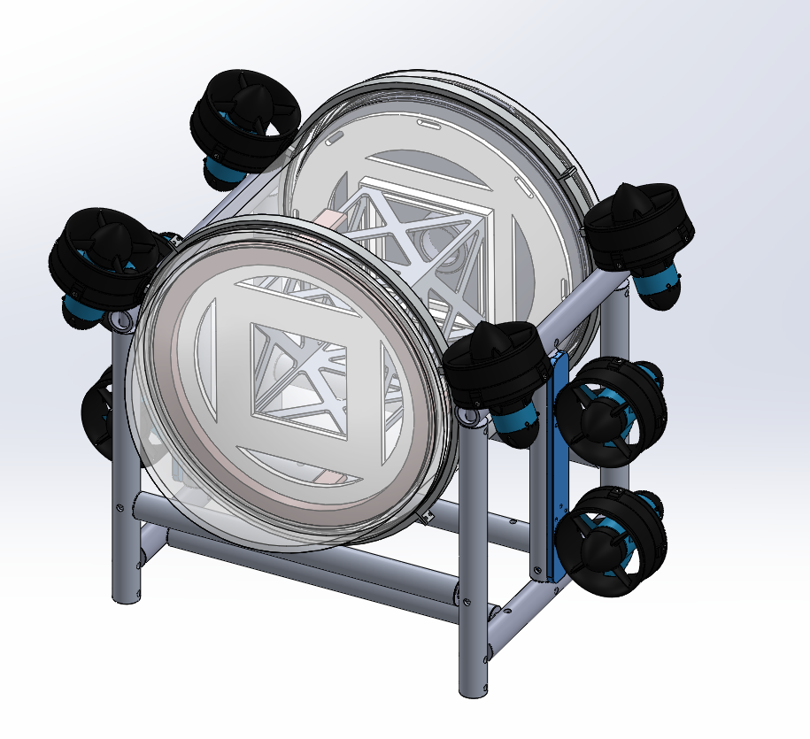
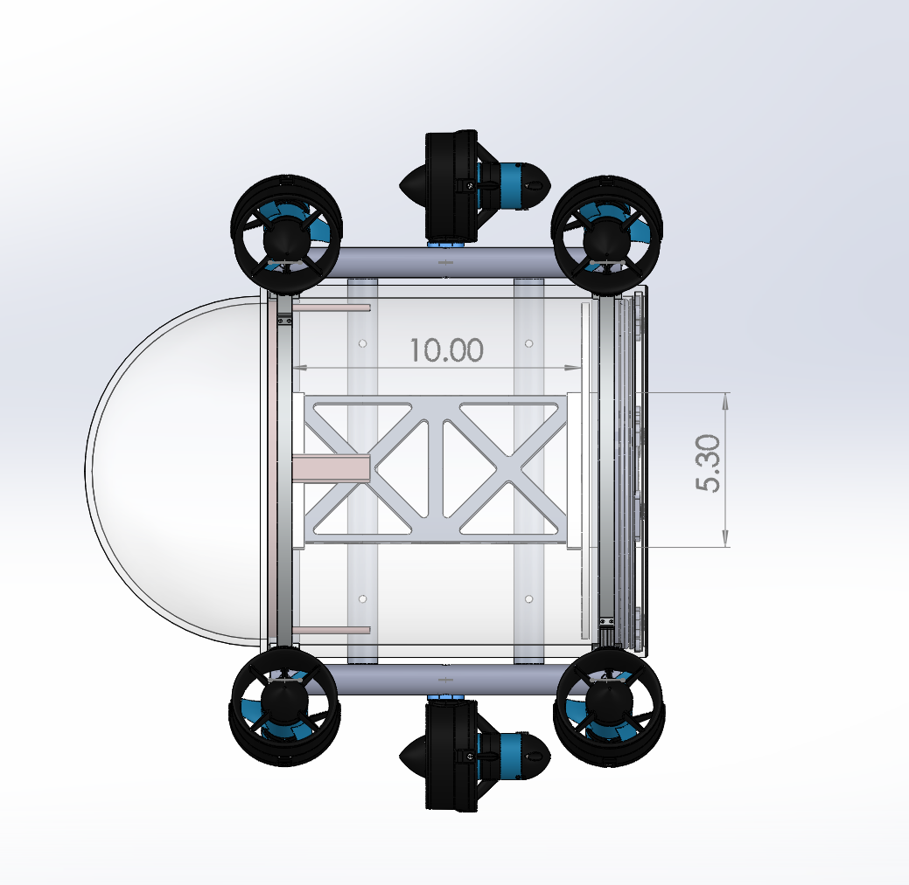
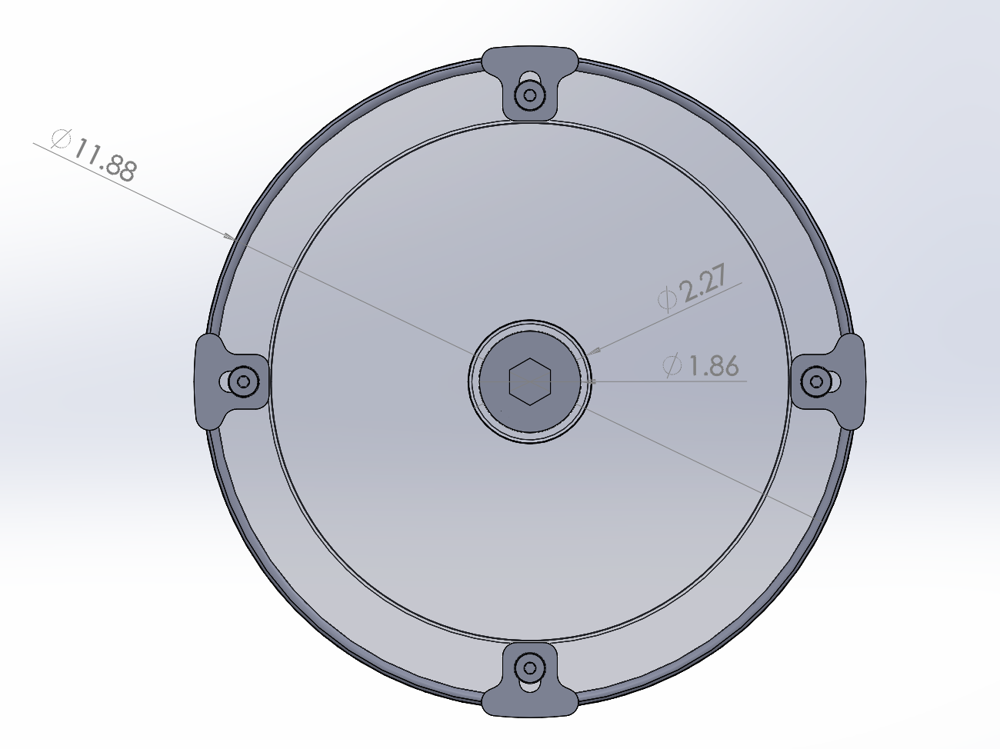
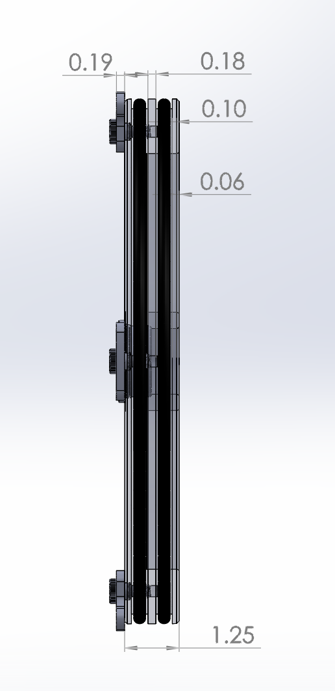
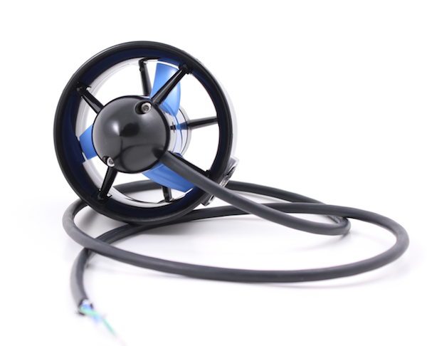
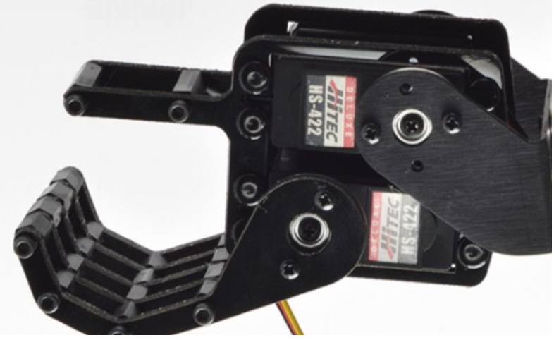
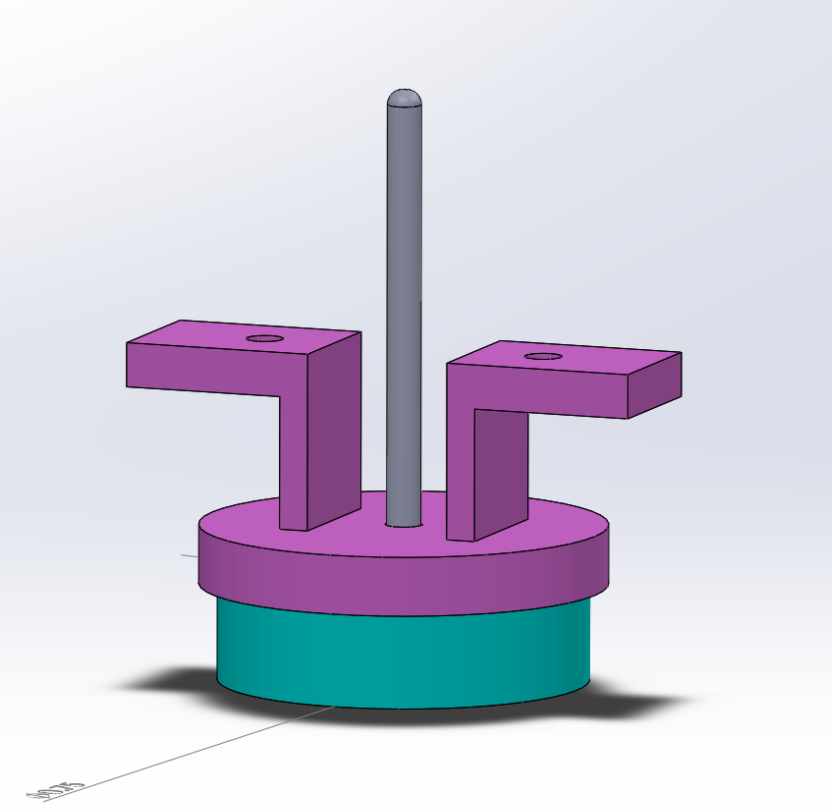
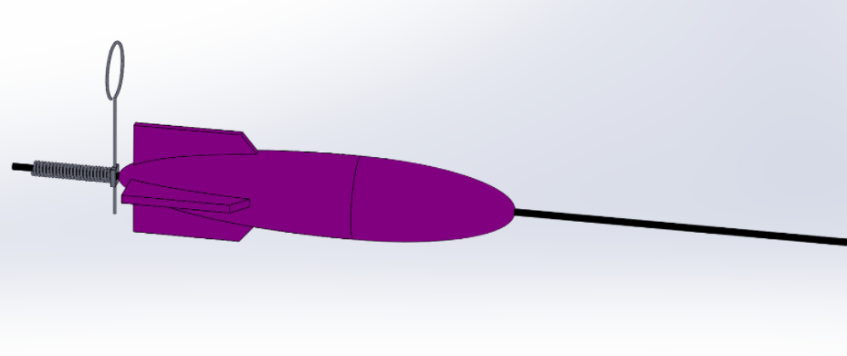

Mechanical Team Lead: Maricarmen Del Toro

Mechanical Works
Frame
The vehicle features a external chassis as a means of holding all mechanical components. Made from a mixture of non flexible EMT steel and aluminum alloy 6061, it can easily be separated from the main hull which allows work to be done on the the actuators and internal components simultaneously. The circular rings include a groove that fit into a corresponding tongue on the main vehicle. This attribute ensures that the hull will not slip from the frame when in operation. Hollow open-ended EMT was chosen rather than its sealed counterpart in order to allow water to flow through the chassis and decrease the amount of trapped air.

Electronics Hull
In order to improve the AUV’s hydrodynamic performance from last year, the shape of the hull was modified from a double flat faced cylindrical compartment to a dome front faced cylinder. The final materials selected for the main hull were selected to be clear PVC for the cylindrical body and polycarbonate for the front dome. These materials were determined to be the most cost effective, lightweight, and durable for the AUV. The dome and body are epoxied and permanently fixed together.

 
Auxillary Housing
Noticing a possible safety concern with storing the four batteries in the primary housing module, two watertight, polycarbonate containers were utilized for this purpose, being that they are prone to explosion under certain circumstances involving high temperature surroundings. The containers have a similar sealing method to the primary housing module, where they allowed access within by a removable lid that can be securely screwed onto a silicon rubber O-ring to ensure water will not come in contact with the batteries.
Actuators
Thrusters
The AUV used eight Blue Robotics T200 Thrusters [#] strategically placed on the frame of the vehicle to enable specific movements underwater. Four of these thrusters were attached to the rings of the frame at the vehicle corners, 10 degrees above the horizontal, with the purpose of directing the cone-shaped water flow away from the sides of the vehicle to maximize efficiency in the up and down direction. The other four were placed in pairs along the left and right side of the frame for forwards and backwards movement, preventing the need to operate at full power being that there are two thrusters attached at each side.
Gripper
Biped Hand “A” from the humanoid Biped Pete assembly [#] acted as the gripper mechanism for the AUV. It was powered by two servo motors: the HS-422 servo controlled the movement of the “fingers” while the HS-485 servo controlled the movement of the “wrist.”These two servos allowed the gripper to have two total degrees of freedom to complete as many tasks as possible. The gripper was also centrally located on a pegboard on the underside of the AUV. This served to better center the gravity of the AUV so that it would remain upright during submersion. This placement also gave better judgment as to the distance the the AUV needed to travel once an intended target came into camera view. In other words, if the visual processor located at the front of the AUV detected an object that needed to be grabbed, the AUV would move approximately half its length so that the gipper would be directly above the targeted object, thus improving gripper accuracy.
Marble Dropper
he team has developed a marble dropper mechanism that is able to drop a maximum of two markers into two different bins. The marker dropper is powered by a 360-degree HS-422 servo [reference #] . Within the marble dropper mechanism, there are three separate compartments. In two of the compartments, a single ½ inch steel marble is placed into each, and the final compartment will be completely empty, serving as the initial configuration of the marble dropper. The mechanism uses the servo to rotate a fan-like apparatus 90 degrees, and pushes each marble out a ¾ inch hole. The marker dropper is attached to a thin, metal, pegboard located on the bottom of the AUV. The marble dropper mechanism is entirely 3D printed out of ABS plastic material.
Torpedo Launcher
Another task required the vehicle to shoot two torpedoes at a designated target. To meet this requirement, the team designed and built two spring-loaded torpedo assemblies. The torpedo and spring each slide onto a ⅛” steel rod, and the spring is held in its compressed position by a pin through the rod. As image processing aligns the vehicle in front of the target, the 360-degree HS-422 servo, which is attached to the pin, powers up. This movement removes the pin from the rod, and allows the spring to decompress, pushing the torpedo off the rod in the direction of the target. The torpedoes and casing are 3D printed out of ABS material.